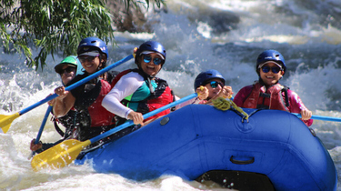

At Green Current Rafting, we believe the best way to love a place is to experience it. Born in Tarija, Bolivia, we guide travelers and locals down our rivers, through green valleys and open skies, with safety, respect for nature, and Bolivian hospitality at the heart ofevery trip. Every journey is a chance to feel the rush of the water, make lasting memories, and help take care of the land that makes it possible.